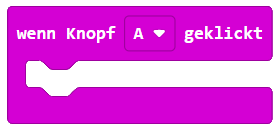
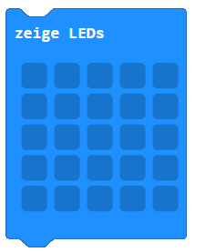

1
Buttons kennenlernen
Der micro:bit hat Knopf A (links), Knopf B (rechts) und die Kombination A+B. Du kannst auf jeden einzeln reagieren — das ergibt drei verschiedene Eingaben!
2
Eingabe-Block einfügen
Klicke auf die Kategorie Eingabe und ziehe den Block „wenn Knopf A gedrückt" in den Arbeitsbereich. Füge darin einen „zeige LEDs"-Block ein und male ein Muster.
3
Ausprobieren
Flashe den Code auf den micro:bit. Drücke Knopf A — dein Muster erscheint! Im Simulator kannst du den Knopf auch direkt anklicken und testen, ohne zu flashen.
4
Erweitern: Knopf B & A+B
Füge einen zweiten „wenn Knopf B gedrückt"-Block hinzu — mit einem anderen Bild. Dann noch einen für A+B. Drei Knöpfe, drei verschiedene Reaktionen!
MakeCode Editor öffnen
In MakeCode öffnen
Öffnet makecode.microbit.org in einem neuen Tab — kein Login nötig.
- Den Block „wenn Knopf A gedrückt" findest du in der Kategorie Eingabe (magentafarben).
- Klicke auf das Dropdown im Block, um zwischen A, B und A+B zu wechseln.
- „zeige LEDs" ist unter Grundlagen — klicke auf die kleinen Quadrate, um Pixel an- oder auszuschalten.
- Du kannst mehrere Eingabe-Blöcke gleichzeitig im Arbeitsbereich haben — sie laufen unabhängig voneinander.
⚠️
Versuche es zuerst selbst — die Lösung ist nur zur Kontrolle!
So sieht der fertige Code aus


✨ Erweiterung: Dupliziere den Eingabe-Block (Rechtsklick → Duplizieren), ändere das Dropdown auf B und male ein anderes Muster. Gleich nochmal für A+B!
✅ Ich habe …
0 / 4